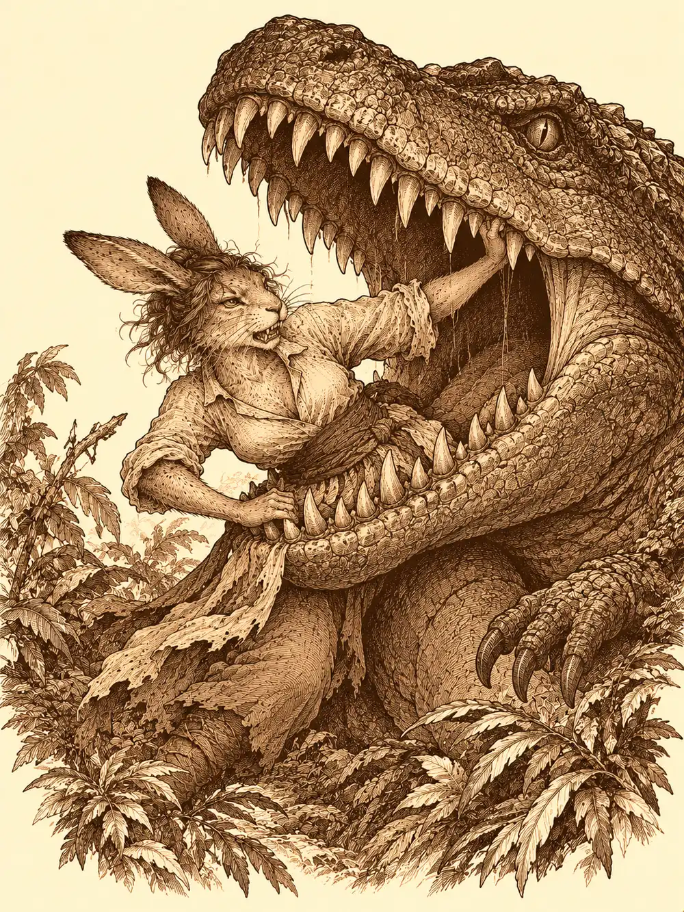

Capítulo 131
Bienvenidos a Xoltacan
Libro VIII · El hilo maldito
El puñetazo sobre la mesa hizo saltar las tuercas que Guxi y Archi tenían esparcidas entre ellos. Kurobane se había quitado la capucha. Tenía un zarpazo nuevo cruzándole la cara y un ojo de cada color, y delante, extendido, un mapa con cuatro puntos marcados: los cuatro templos de los guardianes.
"Tenemos muy poco tiempo entre esta oleada y la siguiente".
Había que pedir ayuda para la guerra a quienes custodiaban la isla, y había que hacerlo ya. Guxi pensó en el Camaro, la carreta de Archi, que corría como el viento. Archi lo miró con lástima. El Camaro tenía otro destino; lo estaba preparando para la próxima batalla y no pensaba gastarlo en excursiones. Además, recordó Guxi, que había estado allí, el templo del sur se escondía entre montañas escarpadas, por sendas tan estrechas que ningún vehículo cabría, y los accesos los guardaban las antiguas tribus aarakocra, que no dejarían pasar a nadie así como así.
Arwen escuchó la historia de los cuatro templos sentada en el regazo de Kurobane, muy atenta al principio y luego cada vez más pendiente de una mosca. Acabó bajándose para ir a olfatear a Serafina. Le olió los pies, le olió las orejas, y concluyó que era un conejo. Un conejo muy alto. Serafina le pidió por favor que mantuviera lejos a Tip, Top y Tap, que la última vez le habían mordido muy feo, y la niña le puso cara de pena.
En ese momento a Archi, que revolvía la bolsa de herramientas de Guxi sin permiso, se le escapó una llave inglesa que fue a caer de lleno en la cabeza de Arwen. Sonó como un gong. La niña se echó a llorar, y el suelo lloró con ella: la base entera tembló, se cayó la mesa, se cayeron las sillas, se cayeron todos menos Archi, que se quedó de pie sin que nadie supiera cómo, y las puertas, recién arregladas, volvieron a romperse. El gnomo le alivió el chichón con un poco de magia. Arwen, todavía con lágrimas, consiguió convencerlo a él y a Serafina de que jugaran con los pequeños yokai, y al rato la capitana tenía mordiscos en las orejas y Archi en el trasero, mientras Guxi y Kurobane arreglaban una puerta.
Entonces una luz verde los envolvió a los cinco. La sintieron como una corriente cálida que les subía por los pies, y la base desapareció.
Lo primero fueron voces en la oscuridad.
"¿Creéis que ha salido bien?".
"¿Crees que son estos?".
Abrieron los ojos en una sala de madera que parecía tallada dentro de un tronco gigantesco. Había un altar adornado con huesos enormes de animales que no conocían, plantas por todas partes, guardias armados mirándolos con atención y unos chamanes que se miraban entre sí como quien acaba de terminar un ritual y no sabe muy bien qué ha conseguido. Ellos estaban en el centro de un círculo. En el altar, sentado, los observaba un hombre con cabeza de elefante, vestido con túnicas extrañas y apoyado en un bastón.
Arwen se acercó a uno de los guardias y le habló en la lengua de los bosques. El guardia, un lagarto, le contestó en la misma lengua que él era un lagarto, y la niña le trepó encima.
El hombre elefante se levantó y se acercó a ellos. Les pasó la trompa por encima, por los brazos, por la armadura de Guxi, por la cara de Archi, curioso como un niño, hasta que Serafina, celosa, le apartó la trompa de Guxi de un manotazo. Él se disculpó: solo quería comprobar si eran buenas personas. Mandó traer cojines de hojarasca para que se sentaran, cuencos de frutas verdes y unos vasos de un líquido verde y caliente que humeaba.
"Soy Eromov, el chamán y representante de este pueblo, Cuicapalli. Estamos en Xoltacan".
A Archi el nombre le sonaba. Era una isla al este de Kuroto, tropical, selvática, poco explorada; se decía que había civilizaciones y bestias de todo tipo, y casi nadie, ni de oriente ni de occidente, iba hasta allí.
Eromov les explicó que habían hecho un ritual para pedir ayuda a la naturaleza, y que la naturaleza les había respondido enviándolos a ellos. No sabía por qué. Tenían un problema: la ruta comercial que llevaba a Tutucán, una de las ciudades más importantes de la isla, estaba bloqueada por unos animales enormes y escamosos.
"Venimos de una isla llamada Kuroto", dijo Guxi. "Allí tenemos muchos problemas y necesitamos volver cuanto antes".
"Por supuesto. La naturaleza os devolverá a vuestro sitio".
Guxi probó suerte: en su tierra se decía que una mano lava la otra, y quizá ellos y su naturaleza pudieran ayudarles en su guerra.
"Nosotros no guerras", dijo el chamán. "Nosotros paz".
Aceptaron. Cuanto antes terminaran, antes volverían. Eromov les estrechó la mano a todos, levantó a Archi con la trompa y lo agitó como a un sonajero, y Arwen, en vez de darle la mano, se le subió encima como un perro.
Cuicapalli era un poblado sobre un pantano, todo puentes de madera, casitas de paja colgadas del agua y gente de todas las formas. Arwen salió corriendo antes de que nadie pudiera organizar nada. Para ella aquello era el paraíso: árboles por todas partes, ríos, animales, olores nuevos en cada esquina.
Entró en una choza de la que colgaba un vial y encontró a un hombre pájaro de plumas negras preparando pociones. Le pareció que olía raro y lo persiguió olfateándolo por medio pueblo, mientras él se apartaba diciendo fuera, fuera, cosa rara, hasta que se subió a un tejado planeando y se encerró en su casa dejando unas cuantas plumas por el camino. Luego entró en una posada donde un lagarto viejísimo, que temblaba como un flan, le dijo que no era una lagartija.
"No lagartija. Yo llamar Golgck".
Le enseñó una cama. Arwen se puso a saltar encima diecisiete veces antes de que él terminara de girar la cabeza. Cuando le dijo que costaba una moneda de oro, ella sacó un puñado entero, unas ochenta, y se las dio. En un taller, un herrero tabaxi la vio revolverlo todo con tanto entusiasmo que cogió un palo, se lo enseñó, lo tiró fuera y la niña salió detrás.
Archi, mientras tanto, se había cambiado de ropa por algo más fresco, había encontrado una hamaca junto al río y se había tumbado en ella con un coco. Cuando Guxi lo encontró, el gnomo trataba de convencer a un vecino de que una tuerca con forma de sol era un tesoro de tierras lejanas. El vecino la miró y le dijo que eso era hierro.
Kurobane y Serafina se retaron a ver quién encontraba antes a la niña. Él siguió su rastro hasta el río, pero fue ella quien acabó llevándosela. Ralph, el ayudante mecánico de Archi, reunió a Guxi y a los demás. Archi había averiguado algo por un guardia: aquellos animales enormes comían sobre el camino a medio día de marcha, no tendían emboscadas a nadie y solo se volvían agresivos si los molestaban. Ninguno de ellos había visto nunca bestias así. Esperaban que Arwen pudiera hablar con ellas.
La jungla olía a tierra mojada y a flores podridas, y el aire pesaba tanto que se podía morder. A medio camino, un lago burbujeaba de una forma que no les gustó a ninguno. A Archi sí: bajo un nenúfar había visto un material que quería. Se metió en el agua.
Unas mandíbulas salieron del fondo y estuvieron a punto de cerrarse sobre él. Serafina lo sacó del agua por el cuello de la camisa y se plantó entre el gnomo y la criatura, sujetándolo con un brazo y repartiendo patadas con las piernas. Guxi desplegó sus torretas, Archi lanzó descargas eléctricas desde el regazo de la capitana, y Serafina terminó con el animal a golpes. Kurobane se acercó a la cabeza muerta y le cerró los ojos.
"Que el camino de la muerte te guíe", murmuró en élfico.

Más adelante, los árboles aparecían doblados, como si por allí pasara gente a menudo, y se oían voces discutiendo.
"Por aquí no era, Cipo".
Sobre una roca, junto a una lucecita brillante que resultó ser una pequeña salamandra de fuego, había una anciana halfling de espaldas. Se llamaba Pinky. Arwen y ella se olfatearon dando vueltas una alrededor de la otra, como dos perros que se conocen en la calle, y cada una le dijo a la otra que olía raro. Kurobane se dio cuenta de que Pinky caminaba exactamente igual que la niña. Miró a una, miró a otra, y le preguntó a la anciana si conocía a la pequeña.
"¿Qué niña? Y ponte de pie, chico, ¿para qué te agachas?".
No tenía ningún interés en ellos. Encendió un puro enorme contra el lomo de Cipo, les echó el humo a la cara, le dio un manotazo a Archi cuando le pellizcó la mejilla y otro con el palo cuando el gnomo, embobado, sacó su pipa para estar a la altura. A Serafina también le dio un golpecito en la cabeza, y la capitana le exigió respeto. Cuando le preguntaron por los animales grandes, señaló detrás de ellos.
"Ahí hay uno".
Se marchó con Cipo, que iba dejando surcos de fuego en la hierba. Arwen la siguió un trecho pisoteando las llamas que dejaba la salamandra, una a una.
Eran dos, de cuello larguísimo y piel escamosa, comiendo plantas del camino con una calma de montaña. Arwen se acercó, les habló en su idioma, y ellos le contestaron. Comían allí porque en lo profundo del bosque había depredadores, y en el camino venían menos. La niña les explicó que eran tan grandes que la gente pequeña no podía pasar, y que si se apartaban a un lado y no atacaban a los viajeros, nadie los molestaría. Los dos animales se movieron hacia la espesura, obedientes.
Se oyó un chasquido seco. Uno de ellos desapareció entre los árboles arrastrado por algo, y salió sangre en un chorro que manchó las hojas. El otro se metió en el bosque detrás, y al poco su cabeza salió volando por encima de las copas y cayó delante de ellos.
Arwen preguntó a las plantas qué había allí detrás.
"Muy grande. Dientes afilados. Manitas pequeñas".
Pinky y Cipo se esfumaron. Los demás apenas tuvieron tiempo de prepararse antes de que irrumpieran dos monstruos de dientes como cuchillos, de los que ninguno sabía el nombre. Uno se tragó a Serafina hasta la cintura y la retuvo en la boca. El otro fue a por Archi.
Guxi disparaba sus torretas y su magia. Archi se multiplicó en copias de sí mismo y dejó a una de las bestias quieta, como hipnotizada. Kurobane llenó el lugar de oscuridad y trepó por el lomo del primer monstruo. Desde dentro de aquella boca, Serafina no podía recibir ninguna cura, y peleó hasta que logró soltarse. Guxi la curó y la aceleró. Arwen levantó un tótem que daba fuerza a los golpes de sus amigos y llamó un rayo de luna que, de paso, despertó a la bestia que Archi tenía hipnotizada. Después provocó un terremoto que tiró al suelo a todos, monstruos y amigos. Kurobane acabó con la primera criatura desde encima y bajó con ella cuando se desplomó.
La segunda aguantó un coco lanzado con catapulta por Archi, las torretas y el fuego de Guxi y los golpes rabiosos de la capitana, hasta que una manada de tigres invocados por Arwen la rodeó, y el último ataque la derribó. Después la niña curó a Serafina con unas hierbas que le hicieron efecto, y además le hicieron caerse el pelo.
Volvieron a Cuicapalli montados en los tigres, cubiertos de sangre, Kurobane sin la parte de arriba de la ropa y Archi con su coco. Arwen le contó a Eromov la batalla con muchos gestos: unos bichos grandes con brazos cortos, otros grandes con cuello de jirafa, un terremoto.
"La naturaleza nos ha enviado legendarios guerreros", dijo el chamán.
Arwen se presentó como diosa protectora de los bosques y de la naturaleza, cada vez con el título un poco más largo, y Eromov lo apuntó con toda la seriedad del mundo. A Archi le regaló un saco de guano de murciélago, material muy importante, se usaba para todo. Archi lo olió con aire experto y dijo que le serviría. En el suelo se iluminó un círculo verde.
"Adiós a los que no tienen título", se despidió el chamán, "y a Arwen la protectora".
Reaparecieron en la base de Sho, en el mismo sitio de donde la luz se los había llevado. Guxi esperó a que todos estuvieran de pie. Entonces se arrodilló delante de Serafina, sacó un papel y lo leyó con la voz temblando.
"Mi amada, que saltas en medio del caos. He calculado que en una vida juntos probablemente me rompas cuarenta y siete huesos, y aun así no hay ecuación más perfecta que tú y yo. ¿Aceptarías, entre barriles y batallas, ser mi capitana para siempre? Porque no importa lo loco que sea el mar, quiero que tú seas mi tormenta".
Y abrió una cajita con un anillo.
Serafina, despeinada y con calvas, oliendo todavía a monstruo, se le echó al cuello. Le dijo que sí. Le pidió, a cambio, un pastel lleno de licor. Guxi la besó, le dijo que era feliz y que lo cumpliría, y se despidieron de los demás para salir a celebrarlo.
Esa tarde, Calista volvió a la base con un montón de papeles y la encontró, una vez más, sin puertas. Archi la recibió en ropa de descanso, con su agua de coco, y le entregó un mapa en un tubo, sus instrucciones y una runa para activarlo. Kurobane apareció cubierto de sangre y le explicó que habían peleado contra unos lagartos grandes. Ella le recomendó que se lavara antes de salir a la calle.
Luego llegó un visitante de uniforme militar, capa blanca y cuernos recortados que decía venir de parte de Kazuki. Se presentó como Kazuha y quería hablar del contrato. Le contó a Calista una guerra de otro mundo y le demostró en el jardín, contra el muñeco de entrenamiento, su rapidez con la espada y su capacidad de volverse invisible. Pero al firmar escribió otro nombre, Dante Okaru; Kazuha era solo un apodo de guerra, explicó. Gelbreak llegó cargado de compras y preparó un hechizo al notar la tensión, y lo apagó porque Calista se lo pidió. El desconocido acabó diciendo que era general del rey demonio Barbatos, que venía de otro plano y que no era ningún infiltrado. Calista se quedó con la firma pero no dio por buena la afiliación: le retuvo el símbolo, le prohibió quedarse en la base y salir de la ciudad, y dijo que hablaría con Kazuki. El hombre aceptó y se fue. Ya en el bosque, sin nadie que lo viera, se volvió invisible y recuperó la forma de Kazuki antes de echar a andar hacia palacio.
Calista seguía mirando el hueco de la puerta, confundida, cuando sonó la piedra de mensajes. Era Banzo, y fue breve: Rua estaba en peligro. Guardó los papeles a toda prisa y salieron hacia el palacio, Gelbreak protestando por los helados que se iban a derretir.
Encontraron a Banzo en los aposentos de la regente, sentado junto a la cama. Rua dormía, agotada de llorar. El goliat les pidió que no hicieran ruido y les contó en voz baja que ella sentía una presencia, que oía susurros, y que temía que tuviera que ver con quien lo había amenazado a él. Gelbreak dijo que quizá fuera el miedo de la guerra y de las votaciones. Calista admitió que podía ser. Banzo no se quedó tranquilo y les preguntó si se podía comprobar si había una maldición. Calista le recordó que ella no era sacerdotisa y le pidió que le contara con detalle lo que Rua le había descrito.
Gelbreak, mientras tanto, se acercó despacio a la cama y se quedó mirando a la mujer dormida.